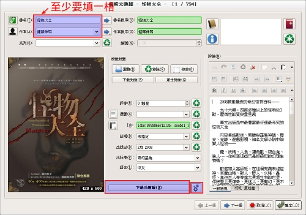

Calibre 的 Anobii-Fetcher 外掛程式發佈

各位讀者或許還記得，咱曾在別的文章中抱怨過，網路上缺乏足夠華文書籍（尤指台灣書籍）的元數據來源。而當時也一度提到：「或許可以從 Anobii 這個網站中抓取 Metadata......」諸如此類的妄想。
本以為這樣的妄想還要很久才能實現。不過此一想法意外得到了 OSSF 的認可與協助，因此就利用此一機會快速將它給實作出來，並命名為 Anobii-Fetcher 發佈。
雖說本外掛程式只適用於 Calibre 而無法用於其他軟體，稍微有點小可惜，但總是有了個還不錯的好開頭。總之希望能藉此幫助台灣的電子書世界補上這一小塊拼圖啦。
此處也需要大力感謝在 Anobii 網站上活動的華文書籍志工們。多虧他們一齊建立了如此完善的書籍資料庫。
Anobii-Fetcher 的特性是......
- 靠現有「標題」與「作者名字」為關鍵字，取得 Metadata。
- 關鍵字即使不完整或不精確也沒關係。可從多本可能的書中選出一本。
- 可取回書籍的「標題」、「作者」、「出版社」、「出版時間」、「ISBN」、「書籍描述（HTML 富文字格式）」、「封面圖片」這些資料。
- 關鍵字即使不完整或不精確也沒關係。可從多本可能的書中選出一本。
- 直接支援 utf-8 編碼，可直接查找含中文在內的多國語言書籍。
安裝方法
首先，當然要先安裝 Calibre 。
其次，您可以在 Calibre 的主畫面中選擇「偏好設定」→「外掛程式」→「取得新的外掛程式」。然後從列表中找尋 Anobii-Fetcher 既可完成安裝。
使用方法
安裝好了如何使用？
其實用法就和其他 Metadata source plugin 一樣。如果您從沒用過搞不清楚，那這裡簡單說一下最基本的用法：
- 按「編輯元數據」按鈕，進入編輯視窗。
- 按下面的齒輪按鈕叫出設定視窗，確定 Anobii-Fetcher 有被打勾啟用。（這個步驟只需確認一次）
- 然後按「下載元數據」按鈕。

▲ 圖1：紅色框框中就是您需要注意的地方。
除此之外還有一些其他用法，好比說靠熱鍵或右鍵選單等等，但太多方法沒完沒了，這裡就先不講了。
維護
如果您對本外掛程式有任何不滿或想法，也可以到 Anobii-Fetcher 源碼倉庫來參與設計或提交 patch！
我儘可能清理並最小化了外掛程式的程式碼，保持可讀性，應該不難閱讀與維護的。